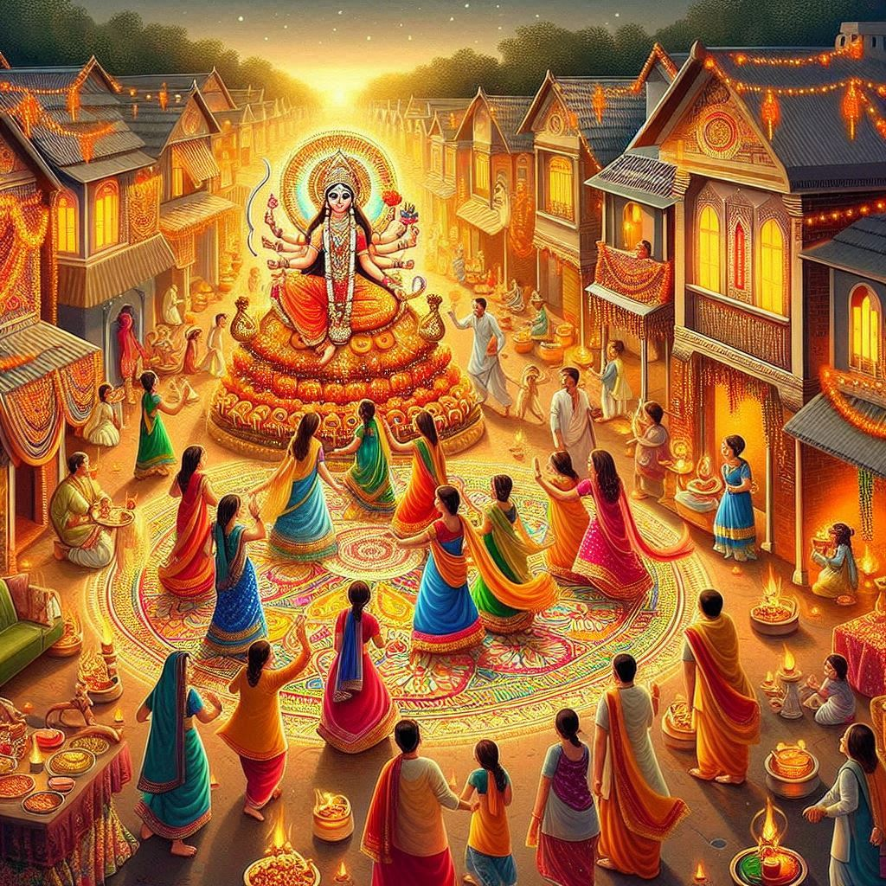
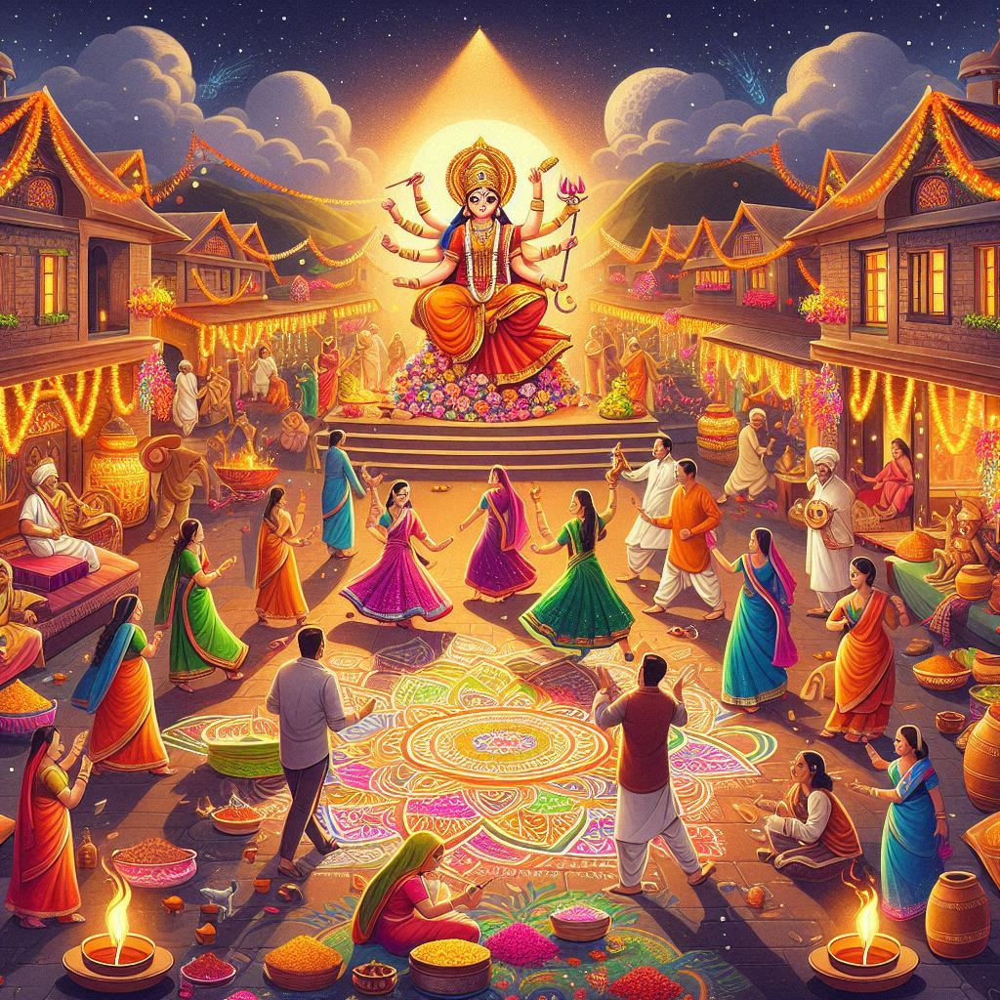

Festivals of Madhya Pradesh
Madhya Pradesh, with its rich cultural and religious diversity, celebrates a wide variety of festivals throughout the year. These festivals are celebrated with great enthusiasm and are deeply rooted in the state's traditions, religion, and history. The festivals are not only an expression of religious devotion but also a way of preserving the unique cultural heritage of the state.
1. Diwali (Deepavali):
- Diwali, the festival of lights, is one of the most widely celebrated festivals in Madhya Pradesh. It marks the victory of good over evil and is celebrated with great enthusiasm. People light oil lamps (diyas), decorate their homes, burst crackers, and indulge in feasts. Temples and homes are adorned with candles and rangolis.
2. Holi:
- Holi, the festival of colors, is another major celebration in Madhya Pradesh. It signifies the arrival of spring and the victory of good over evil. People throw colored powders, dance to traditional music, and enjoy sweets like gujiya. The state’s vibrant atmosphere during Holi is marked by exuberant street celebrations and community gatherings.
3. Navratri and Dussehra:
- Navratri is a nine-night festival dedicated to the worship of Goddess Durga. In Madhya Pradesh, it is celebrated with dancing, especially Garba and Dandiya Raas. The festival culminates in Dussehra, which marks the victory of Lord Rama over the demon king Ravana. The burning of effigies of Ravana is a major event, symbolizing the triumph of good over evil.
4. Makar Sankranti:
- Makar Sankranti is a harvest festival celebrated with enthusiasm, especially in the rural areas. It is marked by flying kites, bonfires, and people preparing sweets like tilgul (sesame and jaggery). The festival signifies the arrival of longer days and the end of winter.
5. Eid-ul-Fitr and Eid-ul-Adha:
- Both Eid-ul-Fitr and Eid-ul-Adha are widely celebrated by the Muslim population in Madhya Pradesh. The festivals are marked by prayers at mosques, feasts, and the giving of alms to the poor. The delicious biryani, seviyan (sweet vermicelli), and other traditional dishes are prepared and shared with friends and family.
6. Ganesh Chaturthi:
- Ganesh Chaturthi, the festival dedicated to Lord Ganesha, is celebrated with great devotion across the state. Temples are decorated with idols of Lord Ganesha, and devotees offer prayers and sweets like modaks (Ganesha’s favorite sweet). The festival ends with the immersion of Ganesha idols in rivers and lakes.


7. Teej:
- Teej is a festival primarily celebrated by women in Madhya Pradesh. It marks the arrival of the monsoon and is dedicated to Goddess Parvati and her union with Lord Shiva. Women dress in colorful clothes, sing traditional songs, and celebrate with dance and festive feasts.
8. Khajuraho Dance Festival:
- The Khajuraho Dance Festival, held annually in the UNESCO World Heritage site of Khajuraho, is a cultural event that showcases classical dance forms of India. The festival attracts artists and tourists from across the globe, celebrating the rich artistic heritage of Madhya Pradesh.
9. Baisakhi:
- Baisakhi marks the start of the new harvest season and is a significant festival for the farmers of Madhya Pradesh. It is a time for thanksgiving and celebrations. People gather in villages for folk dances like garba and dandiya.
10. Buddha Jayanti:
- Buddha Jayanti, the birth anniversary of Lord Buddha, is celebrated in Sanchi, which is an important Buddhist site in Madhya Pradesh. The celebrations include prayers, meditation, and processions, with monks and devotees participating in various rituals.
11. Gurpurab:
- Gurpurab, the celebration of the birth of Guru Nanak, the founder of Sikhism, is celebrated with great zeal by the Sikh community in Madhya Pradesh. The day is marked by processions, prayers, and community meals (langar) at gurdwaras.
12. Madai Festival:
- The Madai festival is celebrated by the tribal communities in Madhya Pradesh, especially in the Bhil and Gond regions. The festival is dedicated to the local deities and is marked by folk dances, music, and feasts. It is a major community gathering that celebrates the agricultural cycle.
Conclusion:
Madhya Pradesh's festivals reflect the state’s diversity, with each festival rooted in its unique cultural, religious, and social traditions. The festivities bring people together, fostering a sense of community and belonging. Whether it’s the grandeur of Navratri, the vibrancy of Holi, or the solemnity of Eid, the festivals of Madhya Pradesh create a cultural fabric that is both rich and diverse.